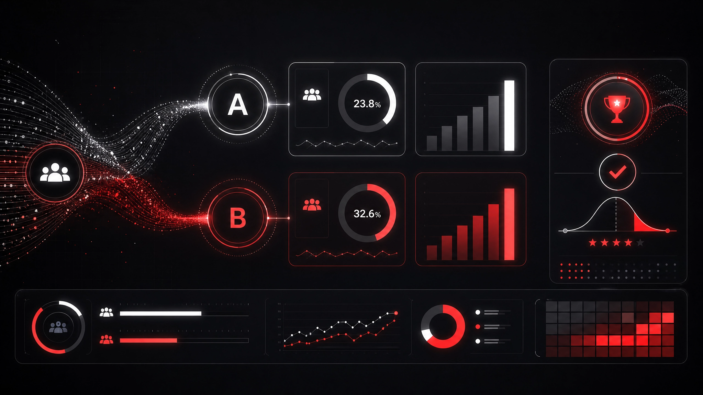

Análise inferencial e experimental de cinco campanhas de marketing em cenário de varejo premium, utilizando testes de hipótese e segmentação inteligente para otimizar o ROI.

Uma rede varejista do setor premium, com portfólio de produtos alimentícios de alta qualidade, bebidas importadas, vinhos, queijos e itens gourmet, enfrentava o desafio de compreender a efetividade de suas cinco campanhas promocionais realizadas ao longo de dois anos.
O caso foi inspirado no processo seletivo do iFood para a área de dados, adaptado pela FNAT para fins acadêmicos.
Focada em clientes com perfil familiar e produtos de ticket médio elevado, como itens gourmet e vinhos selecionados.
Baseada em sorteio, sem descontos diretos. Gasto mínimo elevado para participação. Resultou em baixas taxas de conversão.
Descontos expressivos em produtos de uso cotidiano para ampliar volume de compras e estimular frequência. Parte do Teste A/B.
Descontos competitivos em produtos de maior valor agregado, menos agressivos que a Campanha 3. Contraparte do Teste A/B.
Campanha premium alinhada a produtos familiares de alto ticket (vinhos, queijos). Resultados superiores à Campanha 2.
Desenho intencional para medir qual abordagem (descontos agressivos vs. moderados) traz maior conversão e engajamento.
Base com informações demográficas, comportamentais e histórico de resposta a campanhas:
| Variável | Descrição |
|---|---|
| Income | Renda anual do domicílio |
| MntWines / MntFruits / MntMeatProducts | Gastos por categoria nos últimos 2 anos |
| NumDealsPurchases | Compras feitas com desconto |
| NumCatalogPurchases / NumStorePurchases / NumWebPurchases | Compras por canal |
| AcceptedCmp1 a AcceptedCmp5 | Aceitação de cada campanha (0/1) |
| Response | Aceitou a última campanha (variável alvo) |
| Grupo | Campanha de teste A ou B |
| MntTotal | Soma total de gastos em todas as categorias |
Investigação do perfil de clientes, padrões de consumo e distribuição de resposta a campanhas.
Comparação estatística entre campanhas 3 (descontos agressivos) e 4 (descontos moderados) com teste de hipótese.
Determinação do tamanho mínimo de amostra para validar futuras campanhas com significância estatística.
Identificação de perfis de clientes com maior probabilidade de aceitar campanhas, baseada em dados demográficos e comportamentais.